Taze · Lezzetli · Doğal
Hakkımızda
Taşdelen Fırıncı, Çekmeköy Taşdelen'de bulunan bir fırın ve pastanedir. Her gün taze üretilen ekmek, simit, poğaça, börek, kurabiye, baklava ve pasta çeşitleri sunar; şeker hamurlu özel tasarım pasta siparişi alır. Adres: Turgut Özal Caddesi No:108/C, Bulvar Rezidans A Blok. Sipariş: 0552 340 02 02.
Çekmeköy Taşdelen'de yer alan fırınımızda, doğal ve taze ürünlerle müşterilerimize kaliteli hizmet sunmayı; lezzet ve güveni ön planda tutmayı amaçlıyoruz.
Geleneksel lezzetleri kaliteli malzemelerle buluşturuyor, her gün sıcak ve taze ürünlerimizi sizlerle paylaşıyoruz. Ekmekten tatlıya uzanan geniş çeşidimizle, sabah kahvaltınızdan özel gününüzün pastasına kadar yanınızdayız.
Fırınımız Taşdelen Mahallesi'nde, Turgut Özal Caddesi üzerindeki Bulvar Rezidans'ın önünde yer alıyor. Taşdelen, Alemdağ ve Çekmeköy çevresinden gelen komşularımıza 7 gün 24 saat taze ürün sunuyoruz; cadde üzerinde ücretsiz park imkânı bulunuyor.
Kahvaltı sofranız için: susamlı simit, tereyağlı simit, sade ve peynirli poğaça, kaşarlı açma, tereyağlı kol böreği ve günlük ekmek çeşitlerimiz sabahın erken saatlerinden itibaren tezgâhta bulunur. Gece de açık olduğumuz için sabah kahvaltısını erken kuranlar bizi hazır bulur.
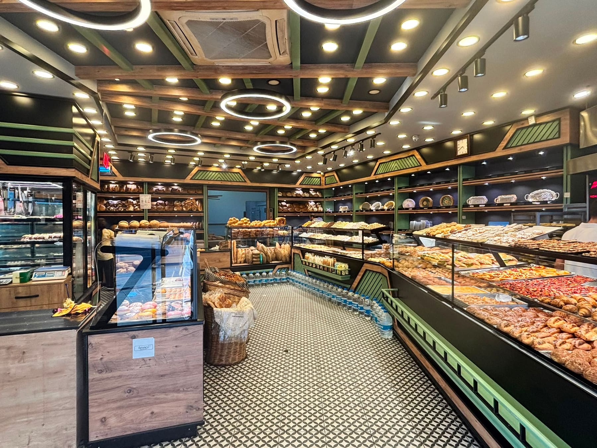
Özel Tasarım
Hayal ettiğiniz pastayı birlikte tasarlıyoruz. Doğum günü, nişan, söz, baby shower, mezuniyet ve tüm özel günleriniz için tamamen size özel şeker hamurlu pastalar hazırlıyoruz.
Sipariş ve detaylı bilgi için bizimle iletişime geçebilirsiniz. Figürlü pastalarda hazırlık süresi gerektiğinden birkaç gün önceden haber vermeniz yeterli.
Pasta Siparişi İçin Arayın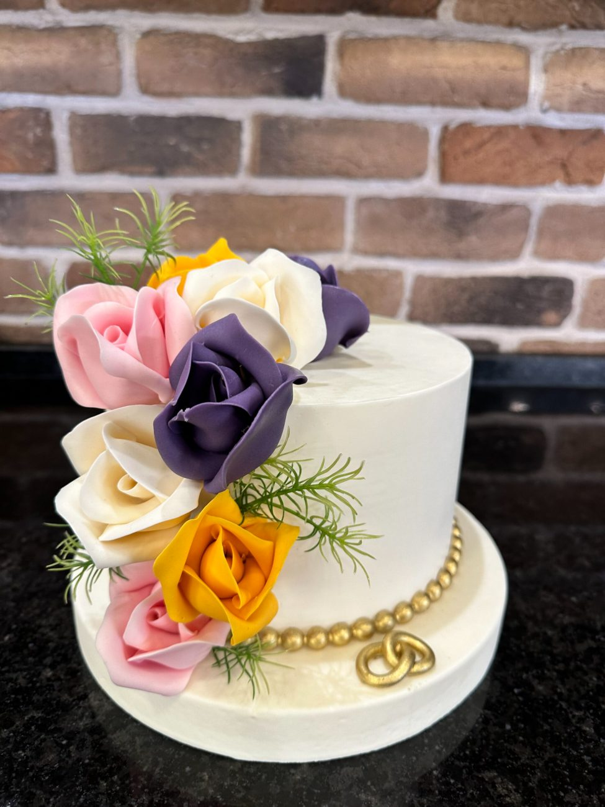
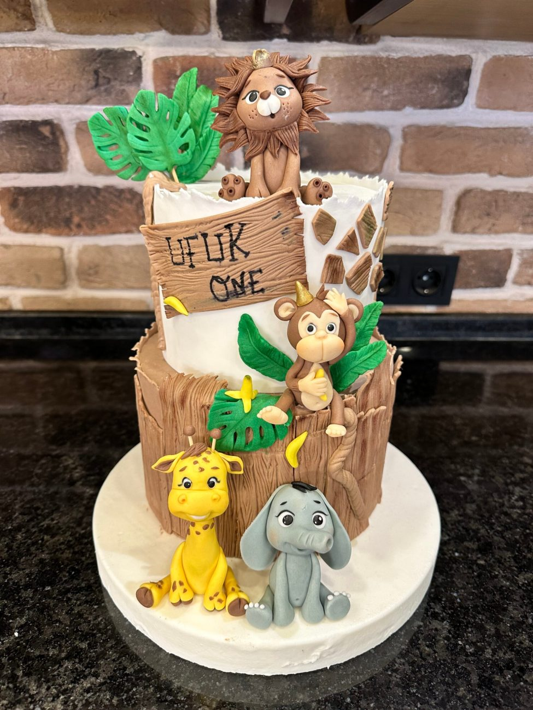
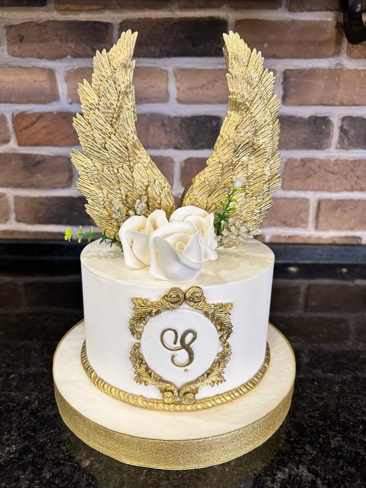
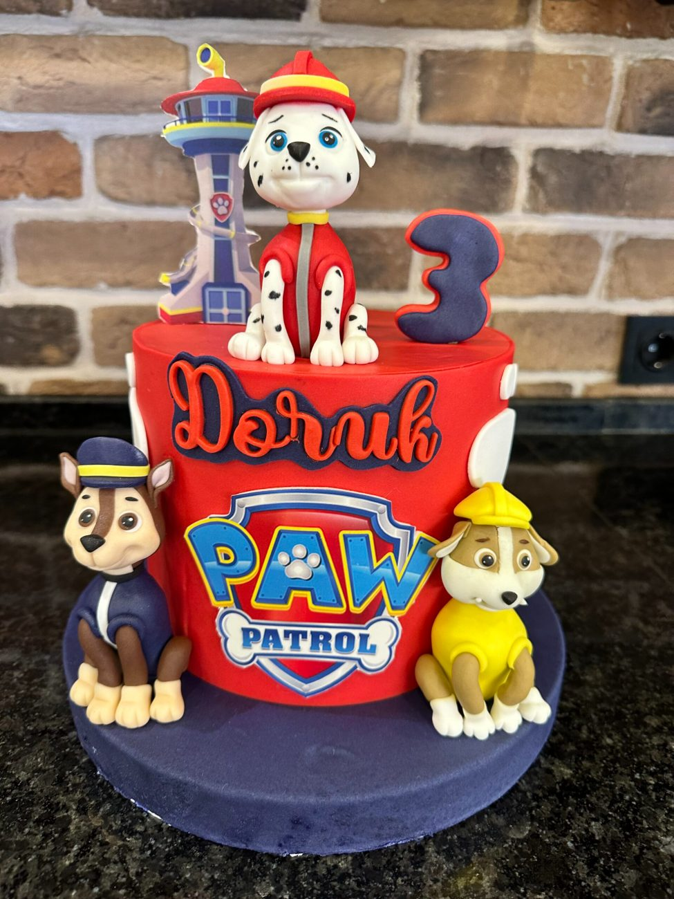
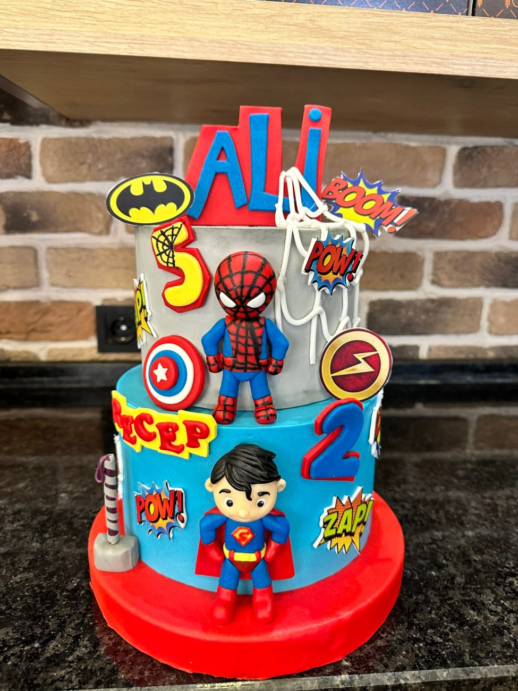
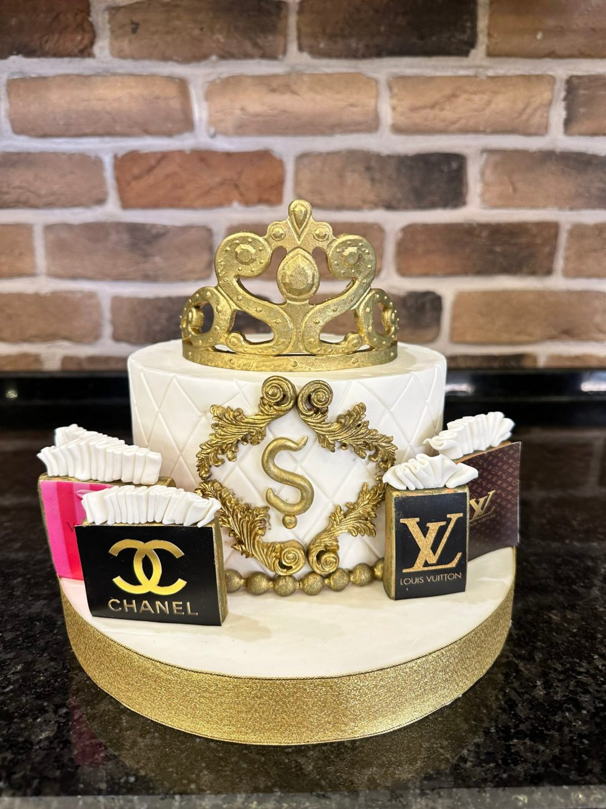
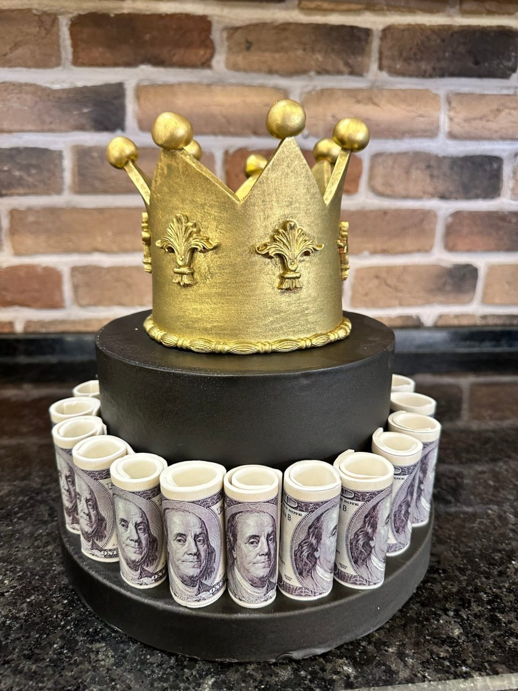
Galeri
Fırınımızda günlük olarak hazırlanan ekmek, simit, poğaça, börek, pasta ve tatlı çeşitlerimizi keşfedin.
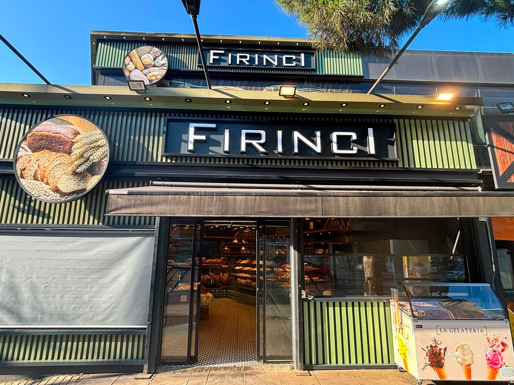
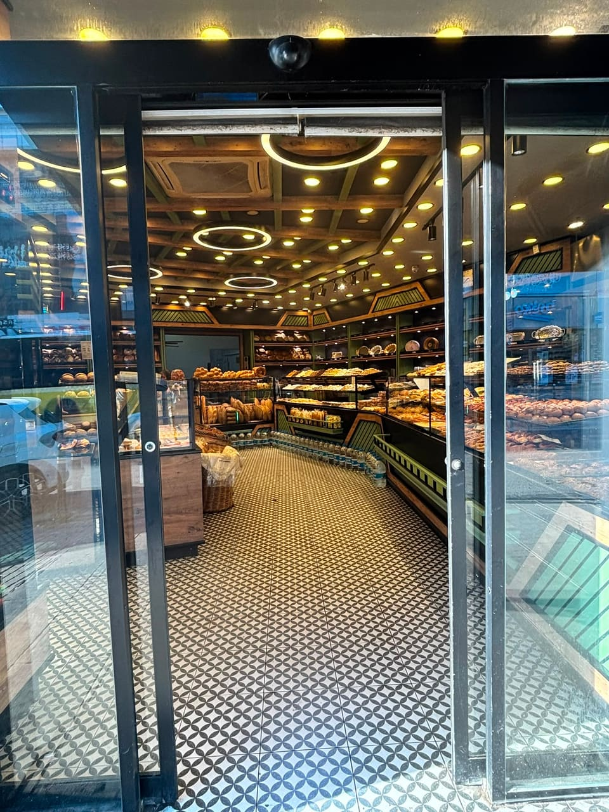
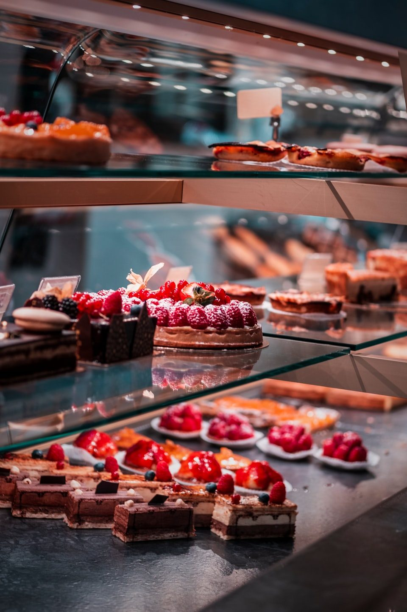
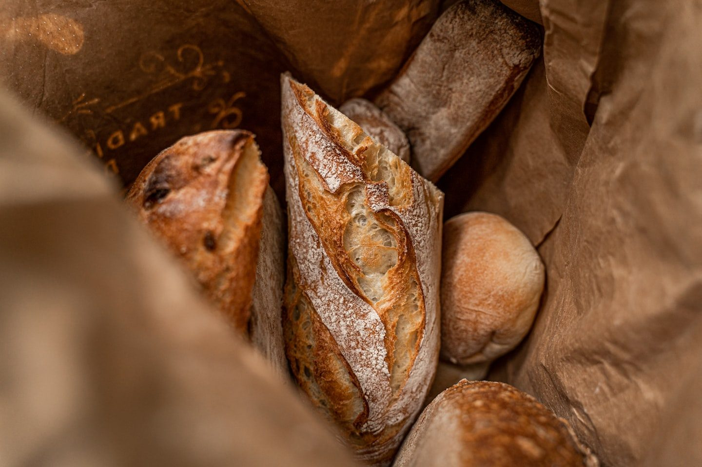
Müşteri Yorumları
Taşdelen Fırıncı’yı tercih edenlerin gerçek deneyimleri.
Ekibinizin sıcak ve samimi hizmeti sayesinde unutulmaz bir tatlı anı yaşadığımı belirtmek isterim.
Her ürününde kalite ve özen gözeten Taşdelen Fırıncı, beklentilerimi fazlasıyla karşıladı.
Kızımın doğum günü için istediğimiz temada pasta hazırladılar, hem görüntüsü hem lezzeti çok beğenildi.
Sabahları taze simit ve poğaça için uğruyoruz; lezzet hiç düşmüyor, personel her zaman güler yüzlü.
Özel gün pastamız zamanında ve istediğimiz gibi geldi. Taşdelen’de güvenle sipariş verdiğimiz adres.
İletişim
Sipariş, özel tasarım pasta ve tüm sorularınız için bizi arayabilir ya da WhatsApp'tan yazabilirsiniz.
Doğum günü, nişan, söz, baby shower ve tüm özel günleriniz için kişiye özel pasta siparişleri alınır.